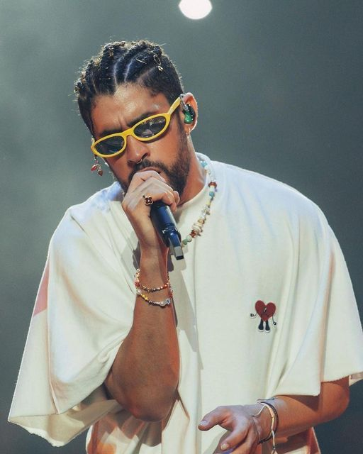

Los Artistas mas Escuchados del Mundo
Bad Bunny
Bad Bunny es el nombre artístico de Benito Antonio Martínez Ocasio, un cantante, rapero y compositor puertorriqueño nacido el 10 de marzo de 1994. Se ha destacado en los géneros de reguetón, trap y música urbana en general. Es conocido por su estilo único, letras controversiales y su imagen distintiva.
Bad Bunny ganó reconocimiento internacional con el lanzamiento de sus primeros sencillos en 2017. Desde entonces, ha disfrutado de un éxito considerable tanto en América Latina como en otros lugares del mundo. Su música ha recibido elogios por abordar temas sociales y personales, así como por su innovación musical.
A lo largo de su carrera, Bad Bunny ha ganado numerosos premios, incluidos múltiples premios Billboard de la Música Latina, premios Billboard de la Música, premios Latin Grammy y premios Grammy. También ha colaborado con varios artistas prominentes, como J Balvin, Ozuna, Daddy Yankee, y ha participado en canciones que han alcanzado los primeros puestos en las listas de éxitos internacionales. Su influencia en la música urbana contemporánea es significativa, y su estilo ha sido elogiado por su originalidad y versatilidad

Taylor Swift
Taylor Swift es una cantante, compositora y actriz estadounidense nacida el 13 de diciembre de 1989 en Reading, Pensilvania. Es una de las artistas más exitosas y reconocidas a nivel mundial en el ámbito de la música pop y country.
Swift comenzó su carrera en la música country, lanzando su álbum debut homónimo en 2006, el cual fue un éxito comercial y crítico. Desde entonces, ha lanzado varios álbumes que han alcanzado la cima de las listas de éxitos en todo el mundo, incluyendo "Fearless" (2008), "Speak Now" (2010), "Red" (2012), "1989" (2014), "Reputation" (2017) y "Lover" (2019).
A lo largo de su carrera, Taylor Swift ha ganado numerosos premios, incluidos múltiples premios Grammy, premios Billboard Music Awards, premios MTV Video Music Awards y premios American Music Awards. Es conocida por sus letras personales y emocionales, que a menudo exploran temas relacionados con el amor, las relaciones y el empoderamiento femenino.
Además de su éxito en la música, Swift también ha incursionado en la actuación, participando en películas como "Valentine's Day" (2010) y "The Giver" (2014), así como en la serie de televisión "CSI: Crime Scene Investigation" (2009).
Taylor Swift ha sido una figura influyente en la industria musical y cultural, y su impacto se extiende más allá de la música, ya que también ha sido reconocida por su activismo político y social, así como por su defensa de los derechos de los artistas y creadores en la industria de la música.

Drake
Drake, cuyo nombre real es Aubrey Drake Graham, es un cantante, rapero, compositor y actor canadiense nacido el 24 de octubre de 1986 en Toronto, Ontario. Es uno de los artistas más influyentes y exitosos en la industria de la música hip-hop y pop contemporánea.
Drake saltó a la fama inicialmente como actor en la serie de televisión "Degrassi: The Next Generation" en la década de 2000, antes de lanzar su carrera musical. Su álbum debut, "Thank Me Later", lanzado en 2010, alcanzó el número uno en las listas de éxitos y estableció su posición como una estrella ascendente en la escena musical
Desde entonces, Drake ha lanzado varios álbumes exitosos, incluyendo "Take Care" (2011), "Nothing Was the Same" (2013), "Views" (2016), "Scorpion" (2018) y "Certified Lover Boy" (2021). Ha ganado numerosos premios, incluidos premios Grammy, premios Billboard Music Awards y premios American Music Awards.
Drake es conocido por su habilidad para fusionar diversos géneros musicales, así como por su habilidad lírica y su capacidad para crear éxitos comerciales. Ha colaborado con una amplia gama de artistas y ha sido elogiado por su influencia en la música contemporánea.
Además de su carrera musical, Drake ha incursionado en otros ámbitos, incluyendo la actuación y los negocios. Es propietario del sello discográfico OVO Sound y ha invertido en empresas como el equipo de baloncesto Toronto Raptors. Su impacto cultural y su éxito comercial lo han convertido en una figura destacada en la industria del entretenimiento.